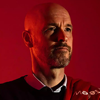

Erik ten Hag เอริค เทน ฮาก

เอริค เทน ฮาก คือใคร?
นี่อาจเป็นคําถามที่แฟนฟุตบอลหลายคนมี ก่อนที่พวกเขาจะประจักษ์ด้วยสายตาตัวเองกับผลงานที่โดดเด่นของทีม ดังจากแดนกังหันลม Ajax Amsterdam ใน ยูฟ่า แชมเปียนส์ ลีกภายใต้การกุมบังเหียนของโค้ชหนุ่มคนนี้
เทน ฮาก ถือเป็นหนึ่งผู้จัดการทีมที่ได้รับการยกย่องมากคนหนึ่งในโลกในช่วงไม่กี่ปีที่ผ่านมา เขาถูกจดจําจากผลงานในศึกยูฟ่า แชมเปี้ยนส์ลีกในปี 2019 ของเขากับ Ajax และหลังจากได้รับการแต่งตั้งเป็นผู้จัดการทีมคนล่าสุดของแมนเชสเตอร์ ยูไนเต็ดของเราหมาด ๆ นั้น คำถามสำคัญก็คือ เขาพร้อมกับความท้าทายครั้งใหม่นี้หรือยัง?
ก่อนจะตอบคำถามนี้ เราไปทำความรู้จักกับผู้จัดการทีมคนล่าสุดของเรากันก่อนครับ
เอริค เทน ฮาก เกิดเมื่อวันที่ 2 กุมภาพันธ์ พ.ศ. 1970 ที่เมือง Haaksbergen เป็นโค้ชฟุตบอลชาวดัตช์และอดีตนักฟุตบอลอาชีพ เทน ฮากเคยเป็นนักฟุตบอลให้กับ FC Twente, De Graafschap, RKC Waalwijk และ FC Utrecht
เขาได้ลงเล่นในบทบาทที่หลากหลาย ทั้งกองกลาง, แบ็กขวา, แนวรับตัวกลาง และลิเบโร่ ก่อนที่จะมาเป็นหัวหน้าผู้ฝึกสอนของ FC Twente / Heracles Academy อันเป็นจุดเริ่มต้นของเส้นทางของการเป็นผู้จัดการทีม ของนายใหญ่ชาวดัทช์คนล่าสุดของทีมเรา
ในฤดูกาล 2018/2019 ซึ่งในฤดูกาลนั้น เทน ฮาก ยังได้ทริปเปิลแชมป์ในประเทศกับ Ajax ก่อนที่หลังจากนั้นก็พาทีมเป็นดับเบิลแชมป์ ได้อีกในฤดูกาล 2020/21 เมื่อพวกเขาเอาชนะ Vitesse 2-1 คว้าแชมป์บอลถ้วยในประเทศไป
ปูมหลังการคุมทีมของเทน ฮาก เทน ฮาก
ได้รับเลือกให้เป็นผู้จัดการทีม Go Ahead Eagles โดย Marc Overmars ที่เป็นผู้บริหารทีมในเวลานั้น จากนั้นเขาก็ไปทำงานให้กับทีมสำรองของ Bayern Munchen ในยุคที่ Pep Guardiola คุมทีมอยู่
แต่ผลงานของเทน ฮากในการคุมทีมสำรองของมหาอำนาจเมืองเบียร์ก็ไม่ใช่สิ่งที่น่าจดจำมากนัก เมื่อเขาไม่ได้มีส่วนร่วมในการปั้นดาวรุ่งขึ้นสู่ทีมชุดใหญ่มากนัก โดยหากจะลองนับดูแล้ว ก็คงมีแค่ Pierre-Emile Hojbjerg กับ Julian Green ที่แฟนบอลพอจะจดจำชื่อกันได้บ้าง
จากนั้น เทน ฮาก จึงย้ายไปรับงานที่ FC Utrecth ในปี 2015 ซึ่งเขาได้พัฒนาสไตล์การเล่นส่วนตัวของเขาต่อไป เดิมทีเขาทำงานกับ Sebastian Haller ที่นั่น ซึ่งอาจจะเป็นเหตุผลที่เจ้าตัวได้ย้ายไปเล่นให้ Ajax ในเวลาต่อมา เทน ฮากได้รับรางวัล Rinus Michels Award ในปี 2016 และหลังจาก Ajax แพ้แมนเชสเตอร์ ยูไนเต็ดในรอบชิงชนะเลิศ Europa League ปี 2017 ผู้จัดการทีม Peter Bosz ก็ไป Borussia Dortmund แต่ถึงอย่างนั้น Ten Hag ก็ไม่ได้เข้าไปคุมทีมในทันที แต่เป็น Marcel Keiser ที่ขึ้นมาจากการคุมทีมสำรอง ที่เข้ามาคุมทีมชุดใหญ่จนถึงคริสต์มาส ก่อนที่เทน ฮากจะเข้ารับตำแหน่งที่ Ajax ก่อนจะพาทีมคว้าแชมป์ Eredivisie ได้สองสมัย
ปรัชญาฟุตบอลของเทน ฮาก เทน ฮาก
เป็นผู้จัดการทีมที่เน้นพื้นฐานการครองบอล ซึ่งได้รับแรงบันดาลใจจากการทำทีมของ Pep Guardiola นอกจากนี้ เขายังเป็นแฟนตัวยงของการเล่นบีบพื้นที่แนวบน อันเป็นรูปแบบที่เขาได้เรียนรู้มาจากบุนเดสลีกา และเขาได้รับการยกย่องจากความเชี่ยวชาญในการเล่นแบบ "False Nine" ซึ่งที่ Ajax นั้นเป็นตำแหน่งหน้าที่ของ Dusan Tadic หรือจะเป็นการเล่นแบบศูนย์หน้าตามแบบฉบับ เทน ฮากก็ทำได้เหมือนกันกับการใช้ Sebastian Haller
การทำงานร่วมกับ Guardiola นั้น ช่วยสอนเทน ฮาก ได้มาก โดยเฉพาะกับการเล่นเกมรุกที่น่าตื่นตาตื่นใจ ทั้งที่ Barcelona, Bayern หรือ Manchester City เองก็ตาม และนั่นเป็นสิ่งที่เจ้าตัวทำกับทีมอย่าง Ajax ด้วยเช่นกัน (เทน ฮากเคยให้สัมภาษณ์ไว้เมือปี 2019)
อีกคนที่ดูจะมีอิทธิพลกับสไตล์การเล่นของเขาอย่างชัดเจนคือ Johan Cruyff ซึ่งผู้เล่นที่ Ajax นั้น ก็ได้เคยกล่าวถึงสไตล์ของ Ten Hag ที่ต้องการเน้นให้โจมตีด้านข้างบ่อยๆ ตามแบบฉบับของ Total Football ด้วย
Ajax ในยุคของเทน ฮากนั้น เล่นในรูปแบบ 4-3-3 และแทบจะไม่ปรับไปใช้ระบบอื่นเลย โดยพวกเขาใช้ระบบฟูลแบ็คที่เติมเกมขึ้นมา พร้อมกับปีกสองข้างที่ชอบตัดเข้าด้านใน และโครงสร้างกองกลางที่เน้นการยืนเป็นแนวเดียวกัน
จุดแข็ง และจุดอ่อนของเทน ฮาก
เทน ฮาก นั้น ถูกเปรียบเปรยว่า "มีความนุ่มนวล" จากบรรดาบอร์ดบริหารที่ Bayern ทำให้เกิดความรู้สึกว่าเจ้าตัวอาจไม่ใช่พวกวินัยจ๋า หรือเคร่งครัด และน่าจะเป็นสายที่พยายามกระตุ้นผู้เล่นของเขา แทนที่จะปกครองด้วยความหวาดกลัว
แต่ในขณะที่ทุกคนยกย่อง เทน ฮาก และสไตล์การเล่นของเจ้าตัวว่ามีชีวิตชีวาและสร้างสรรค์ แต่ก็ยังมีข้อสงสัยเกี่ยวกับความเหมาะสมของเจ้าตัวกับทีมที่ใหญ่อย่างยูไนเต็ด และในวัย 51 ปี เขาไม่ต้องรับมือกับความทะเยอทะยานหรือแรงกดดันจากการนำทีมระดับยักษ์ใหญ่ ในลีกที่มีการแข่งขันสูงมาก่อน รวมไปถึงการคุมทีมที่มีสตาร์ที่มีอิทธิพลในทีมสูงแบบทีมเราด้วย
ก็เป็นเรื่องที่น่าติดตาม และต้องให้กำลังใจและเวลาในการทำทีมสำหรับนายใหญ่คนใหม่ของทีมเรา แต่เชื่อว่าแฟนบอลปีศาจแดงทุกคน น่าจะอยากเห็นโฉมหน้าและรูปแบบการเล่นของทีมเรา ภายใต้การคุมทีมของเทน ฮาก เต็มแก่กันแล้ว
It uses utility classes for typography and spacing to space content out within the larger container.
Learn more